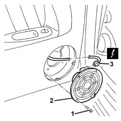

5580T20 bose sound system rear speaker (one), lh or rh - r r
- Path
- Procedures > 55 ELECTRICAL EQUIPMENT > 5580 SPECIAL ACCESSORIES > 5580T bose sound system > 5580T20 bose sound system rear speaker (one), lh or rh - r r
- Kind
- repair procedure (removal / refitting; the operation number is the code)
- Applies to
- all engines; all production periods
- Interactive page
- https://sloeber94.github.io/elrnDB-a156/en/#/3238553
Applies to: all engines; all production periods
 Removing
Removing
 Refitting
Refitting7010E22 grille for radio system on rear door panel (one) lh or rh - r r
1. Unscrew the bolts
2. Move the speaker.
3. Disconnect the electrical connection and recover the speaker.
 | Name | Connector |
|---|---|---|
3 | Speaker in rear left door |
| Name | Connector |
|---|---|---|
3 | Speaker in rear right door |

Applies to: all engines; all production periods
Refitting
RemovingCheck that the speaker is not damaged.
Connect the electrical connection
Place the speaker in position.
Tighten the screws.
7010E22 grille for radio system on rear door panel (one) lh or rh - r r
Check the operation of the HI-FI system.